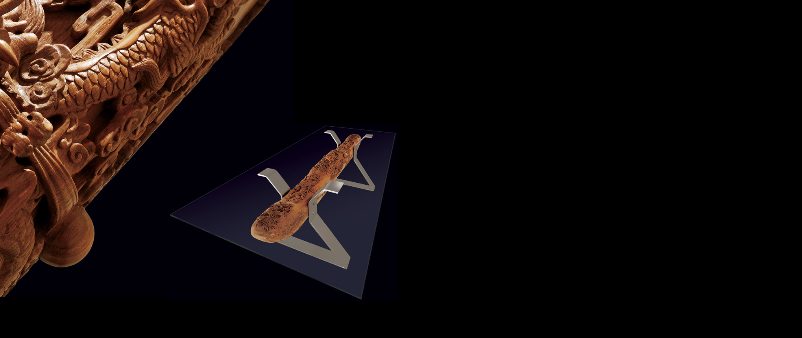
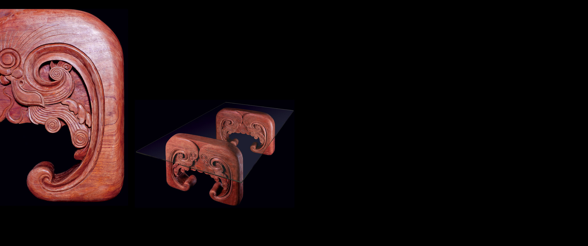
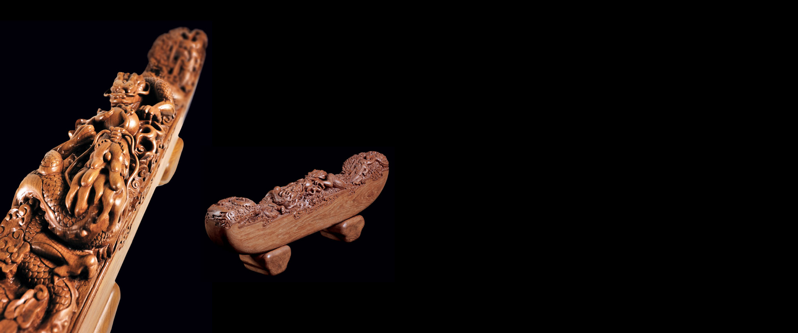

木作
-

[Beam Table I]
It draws the ¡°shoe-shaped ingot¡± mould from traditional Chinese wooden architecture and adds with some modifications. Combining the stainless steel support, it holds up the huge ultra-white glass table-board. It adopts a whole piece of Myanmar teakwood of 150 years old as its pillar and applies techniques of line carving, intaglio, relief, hollow engraving which coil five different and lifelike dragons on the whole pillar. They're either dignified and imposing or profound and implicit. The top of the pillar is modified with curly grass patterns and with clouding moir¨¦ at its side. The hardness and sharpness of modern materials combing with the mildness and winding of traditional woodcutting, it forms a highly tensile contrast.Size W×D×H（mm）
1200×2400×780
Material
Teak Rosewood
-

[Beam Table II-Cat Beam]
Cat beam got name for its cat-like appearance. In Chinese folklore, cat implied the meaning of attracting wealth. In traditional wood construction architecture, cat beam is placed on the girder of central hall, which took the considerations of both structure and the aspiration for blessing of the house owner. The table surface is affixed with super-white toughen glass, thus coexists with tradition and modern elements and thus brings a natural dialogue.Size W×D×H（mm）
1200×2400×780
Material
Teak Rosewood
-

[Yuanbao Wood Beam-Dragon]
Influenced by the elements of Huizhou architecture, this work is purely handcrafted with a single piece of Myanmar teakwood of 150 years old. With the techniques of expression of circular engravure, relief, intaglio on the top of the beam body to get the pattern of Two Dragons Playing Pearl, the two dragons are symmetrically distributed at two ends, with bright and valiant look and life-like bearing. With auspicious clouds coiled up everywhere, the sophisticated craftsmanship and the simple beam body forms a bright contrast, fully reflecting the elegant, meaningful characters of wood.Size W×D×H（mm）
1200×2400×780
Material
Teak Rosewood